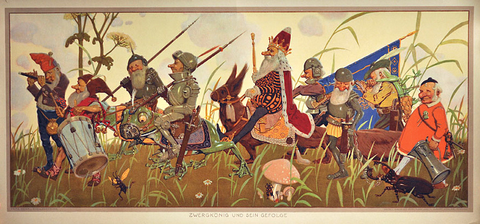

Bredebie et compagnie 1/3
Bredebie et compagnie est une nouvelle que j’ai rédigée pour participer à un concours afin d’être publiée dans une anthologie. Mon texte n’a pas été retenu, alors j’ai décidé de le poster sur ce blog pour que vous puissiez le lire quand-même ! Voici la première partie.

Je suis arrivée à Rivefolle il y a deux saisons, alors que le ruisseau était encore gelé et enfermé dans un couloir de congères démesurées. Je séjourne au Dragon qui rote, une auberge mal famée et insalubre, seule. Mon frère et ma chère sœur m’ont tout simplement chassée des mines familiales parce que, selon eux, je suis trop faible et absolument bonne à rien à la forge. Débarquer dans une bourgade d’hommes lorsque l’on mesure à peine cinquante pouces, c’est dur. Je ne suis déjà pas très grande parmi les membres de mon espèce, alors imaginez la naine que je suis perdue au milieu d’une foule d’humains. Leurs ceinturons se trouvent au-dessus de la pointe de mon casque que j’ai pourtant fait exprès de forger très allongé.
À vrai dire, j’évitais jusqu’à maintenant de quitter ma chambre, car je ne suis pas très à l’aise quand il y a du monde alentour. Malheureusement, mon séjour s’éternisant plus que je ne l’aurais espéré, les pièces d’or que j’ai volées lorsque j’ai été expulsée de chez moi se font de plus en plus rares. Il me faut trouver du travail au plus vite pour ne pas me retrouver sur le pavé. Je m’apprête à rejoindre la salle commune de l’auberge avec une certaine crainte. Je ne sais pas trop comment demander au vieux boiteux qui tient l’établissement s’il peut me loger gracieusement en échange de mes services.
En bas de l’escalier rongé aux mites, un homme vêtu d’une longue cape noire me bouscule et bredouille un “pardon” maladroit avant de disparaître par la porte du fond. C’est la première fois qu’un membre de l’espèce humaine s’excuse de m’être rentré dedans. Ahurie, je m’aperçois, trop tard, qu’il a laissé tomber un parchemin à mes pieds. Il s’agit d’une annonce intéressante qui pourrait bien être le présage d’un changement de cap dans mon destin.
Recherche valeureux guerrier pour mission de sauvetage. Prime à la clef. RDV au salon privé du Dragon qui rote au coucher du soleil.
Une mission de sauvetage… Cela me permettrait enfin de prouver à ma famille que je suis une digne descendante de Nargor, grand chef des nains. Et en plus, je serais payée. Lorsque je pénètre dans le salon, petite pièce circulaire aménagée d’une table en hêtre et d’un haut siège déjà occupé, je ne suis pas étonnée de constater que je ne suis pas la seule candidate pour cette aventure. Le casting présent me parait pourtant des plus étranges. Je reconnais l’homme à la cape aperçu plus tôt dans l’escalier. Il est appuyé sur un long bâton autour duquel ses doigts ridés sont crispés comme si sa vie dépendait de sa prise sur l’objet. Il y a également le barde qui anime ordinairement l’auberge. Il est le seul que j’aie jamais vu coiffé d’une crête descendant du haut de son front jusqu’à ses cervicales. Cela ne l’aide pas particulièrement à fidéliser son public, le pauvre… Une créature hideuse se tient entre les deux humains, ses mains gonflées et purulentes à demi enfoncées dans les poches trop petites de son tablier en peaux de taupes.
— Un nain désormais, s’exclame l’homme assis en face de l’assemblée, et pas des plus vaillants apparemment !
Je réalise qu’il parle de moi. Les naines disposent, au même titre que leurs homologues masculins, d’une pilosité particulièrement intense, notamment tout autour du visage. Cette personne me prend pour un mâle. Ce quiproquo me ravit, mais le ton sardonique qu’il emploie et l’air tendu affiché par ses visiteurs me déplaisent. Inutile de se torturer l’esprit pour comprendre que comme moi, ces malheureux sont venus le rencontrer dans l’espoir d’être payés pour la mission à accomplir. De toute évidence, le chevalier, dévêtu d’une partie de son armure abandonnée sur la table le séparant des postulants, n’est guère satisfait des options qui s’offrent à lui. Je réfléchis à toute vitesse tout en m’avançant d’un pas que j’espère ferme jusqu’au petit groupe éclectique.
— Vous ne m’avez pas attendu ! Brigands ! lancé-je brusquement.
Le barde sursaute presque autant que moi à l’entente de ma voix grave et rocailleuse puisée pour l’occasion dans l’héritage de mes ancêtres. Le chevalier se redresse dans son siège et me dévisage d’un air soupçonneux, à l’instar du vieillard dont les yeux bleus perçants brillent d’un éclat soudain sous son capuchon. Je ne peux me prononcer sur la réaction de la bête, son visage rose difforme et couvert de pustules ne me permettant pas de discerner son expression.
— Vous connaissez-vous ? interroge le chevalier.
— Effectivement, réponds-je, vous avez devant vous la Compagnie de… la Compagnie…
— D’Aldanorn, intervient le mystérieux encapuchonné.
Le barde se met à tousser et la créature essaye de lui taper dans le dos pour le soulager, mais il semblerait qu’elle lui décroche plutôt la cage thoracique. Elle possède apparemment une immense force. La réaction du ménestrel attise les soupçons de notre employeur potentiel. Je décide de rattraper le coup :
— Notre communauté agit secrètement pour l’accomplissement de missions importantes.
— Vous plaisantez ? Un barde dépravé, un mage à la retraite, une goule et un nain à demi portionné ?
— Nous avons accompli de grandes quêtes !
Je tente encore de nous défendre, mais j’ignore pourquoi. Mon idée me parait des plus stupides exposée sous cet angle. Évidemment, posséder un mage dans son équipe pourrait être un atout, mais s’il est au bord du trépas, cela ne sert pas à grand-chose.
— À vous quatre ? insiste le chevalier, dubitatif.
Il nous dévisage tour à tour. Je soutiens son regard, mais je n’ose même pas imaginer celui du poète dont j’entends les dents claquer à côté de moi. Qu’est-ce qui a pu amener un tel trouillard à tenter de s’enrôler pour une mission apparemment dangereuse ? Le mage semble plus fiable, quoique légèrement inquiétant. Je me demande d’où lui est venu ce nom pour baptiser notre communauté improvisée. Je ne sais vraiment pas quoi penser de la goule. Ces créatures sont pires que les trolls ! Il parait qu’elles mangent tout ce qui bouge. Et tout ce qui ne bouge plus également d’ailleurs. D’aucuns racontent qu’elles raffolent même des cadavres. Eurk !
— Je ne recrute pas pour faire mumuse ! poursuit le chevalier.
Je me ressaisis et essaye de ne plus me laisser distraire. Cette mission semble périlleuse, et il est peut-être préférable de tout abandonner dès que possible.
— Je vous parle de sauver ma princesse qui a été enlevée par un dragon ! Esas est vicieux, il a pris Elgge parce qu’il sait qu’elle est tout ce qui compte pour moi ! Il veut de l’or et des diamants, et je les lui donnerais volontiers si je les possédais en quantité suffisante. Il va la dévorer si je ne paye pas sa rançon. Ma seule alternative est de lui envoyer des guerriers. Mes hommes ont refusé. Ils ont peur des dragons. Ce sont des hommes… Je pensais trouver un valeureux magicien pour me sortir de cette impasse…
Il jette un regard dédaigneux au mage.
— Il n’y a même pas un elfe dans votre compagnie, ajoute-t-il, désespéré. C’est voué à l’échec.
— Un elfe ? m’insurgé-je, un nouvel élan de courage se propageant en moi. Nous n’en avons pas besoin pour réussir. Ces créatures sont…
Le chant d’un arc et le sifflement d’une flèche me font taire alors que cette dernière me grille la moustache et s’enfiche dans le casque du chevalier qui se retrouve cloué au mur derrière lui. Nous nous tournons tous simultanément vers la porte et notre hôte écarquille les yeux à la vue de son nouveau visiteur. L’elfe qu’il espérait tant voir dans la compagnie se tient devant nous, intimidant et grandiose, avec ses cheveux d’ébène glissants dans son dos et son carquois étincelant sur l’épaule. L’effet aurait pu avoir l’air d’autant plus remarquable si cet individu ne louchait pas de cette manière si inquiétante et si sa bedaine rebondissante restait correctement gainée sous son corset. Or, ce n’est pas le cas. Une désagréable odeur de bière rance se répand inexorablement autour de nous lorsque le nouveau venu s’avance en titubant dans le salon.
— Z’avez d’mandé un elf’ ? balbutie-t-il péniblement. Chuis là !
— Que… qui êtes-vous ? demande le chevalier.
Sa voix – montant légèrement dans les aiguës – nous apprend que le sentiment de soulagement qui s’est emparé de lui à la vue d’une flèche si bien décochée se meut progressivement en panique à l’idée que ce projectile aurait tout aussi bien pu lui traverser la tête. L’elfe est complètement ivre !
— Chuis Torïl, fils de Arïl.
— Ce pochetron fait partie de votre compagnie !?
— Non ! m’empressé-je de répondre.
— Ouais m’sieur, lance au contraire l’intéressé.
Avant que je puisse riposter, le mage se met à gesticuler bizarrement. Il ôte tout à coup son capuchon d’un moulinet d’épaule, révélant sa longue chevelure argentée. Le vêtement tombe à ses pieds tandis qu’il brandit son vieux bâton devant lui. Je sens ma langue se rétracter dans ma bouche, et d’après leur expression de stupeur, je suppose que l’elfe, la goule et le barde ressentent la même chose. Le chevalier quant à lui semble complètement perdu. Son regard vaseux navigue vaguement d’un visiteur à l’autre. Il ne parait plus savoir comment réagir. Je comprends que le mage a dû nous jeter un sort à tous et alors que je me réjouis qu’il parvienne à amadouer notre recruteur, celui-ci se lève brusquement, mû en fin de compte par sa volonté propre. Le bâton desséché du sorcier se met à vaciller entre ses doigts.
— Diantre ! s’exclame-t-il au moment où l’âme du chevalier réanime ses pupilles anormalement dilatées.
— Vous n’êtes qu’une bande de bons à rien ! rugit-il. J’irai affronter Esas moi-même, le désastre en sera forcément moins grand.
Il quitte la pièce, son armure cliquetant dans son sillage, et claque la porte d’un air furibond. Son heaume pend toujours au bout de la flèche elfique, contre le mur. Je remarque que ma langue est déliée lorsque je parviens à dire :
— Bravo l’elfe, grâce à toi notre mission finit aux orties.
Le poivrot me répond par un ronflement, il est écroulé par terre.
— Nous devons retrouver la princesse, lance tout à coup le barde.
Surprise, je le dévisage en attendant une explication. Ses yeux émeraude sont fuyants et ses mains frêles qu’il entortille nerveusement ne cessent de trembler.
— Nous ne serions pas payés, lui rappelle le mage.
La goule pousse un grognement aigu qui semble signifier qu’elle soutient les propos du vieillard, car il hoche la tête vers elle.
— Peu importe, je dois partir à l’aventure, insiste le poète.
— Pour quelle raison ?
Le magicien parait poli, mais aussi très curieux. Nous ressemblons soudain à la compagnie que nous prétendions être.
— Je ne sais plus quoi chanter, se lamente aussitôt l’artiste. Je manque cruellement d’inspiration et je ne peux continuer à conter les injustices de Rivefolle. Mon auditoire s’en plaint plus que régulièrement…
Je me rappelle effectivement avoir entendu des protestations provenant de la salle commune la veille au soir.
— C’est toi qu’ils ont chassé hier, euh… ? Comment t’appelles-tu ? lui demandé-je.
— Je me prénomme Barnabé. C’est bien moi qu’ils ont chassé. Ils m’empêchent désormais de conter mes vers.
— Écoute Barnabé, c’est dangereux d’affronter un dragon uniquement pour trouver de quoi chanter. Pourquoi n’inventerais-tu pas une aventure ?
— Parce qu’elle ne serait pas crédible. Et toi, te serais-tu fait passer pour un mâle seulement pour l’argent ? Je sais que les membres de ton espèce sont avares et cupides, mais de là à partir combattre un serpent volant avec des compagnons improvisés…
Je ne relève pas cette description bien trop péjorative à mon goût du peuple nain, car la goule et le mage semblent également très intéressés par mon histoire et je suis prise au dépourvu.
Bredebie et compagnie de Kurai Akemi est sous licence Creative Commons “pas d’utilisation commerciale, pas de modification, 4.0 International”.
Crédit de l’image : Lithographie de Fritz Rehm, 1915